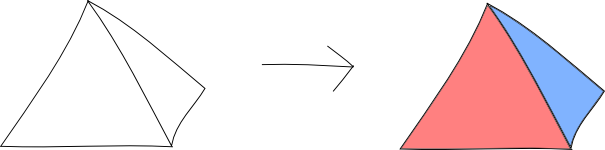
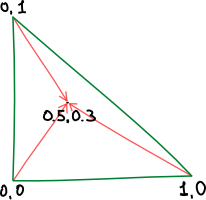
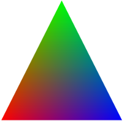

This article aims to ease the entry threshold into pure WebGL, give an initial idea and suggest where to go next.
A programming library for the JavaScript language
https://www.khronos.org/WebGL, unlike Javascript, has a high entry threshold; few people still use it, and even fewer write about it.
WebGL technology allows you to draw graphics in the browser using the capabilities of the video card
If you think WebGL draws 3D, you are wrong. WebGL knows nothing about 3D.
All he can do is draw triangles.
Unlike OpenGL, WebGL uses only shaders for rendering.
A shader is a program that runs on a video card and uses the GLSL language.
GLSL (OpenGL Shading Language, Graphics Library Shader Language)
There are two types of shaders: vertex and fragment.
If the vertex shader defines the geometry of the figure, then the fragment shader defines its color.
OpenGL Shading Language
A high-level language for programming shaders.
https://ru.wikipedia.org/wiki/OpenGL_Shading_LanguageLet's look at the shader code for a triangle:
Vertex shader example:
attribute vec3 a_position;
attribute vec3 a_color;
uniform vec3 u_position;
varying vec3 v_color;
void main(void) {
v_color = a_color;
gl_Position = vec4(u_position + a_position, 1.0);
}
Example of a fragment shader:
precision mediump float;
varying vec3 v_сolor;
void main(void) {
gl_FragColor = vec4(v_color.rgb, 1.0);
}
Shaders have three types of variables:
The values of the varying variables inside the triangle are calculated based on the values of these variables at the vertices
Get the WebGL context
var gl = canvas.getContext(‘webgl’);
var vertexShader = gl.createShader(gl.VERTEX_SHADER);
gl.shaderSource(
vertexShader,
document.getElementById('vertexShader').text);
gl.compileShader(vertexShader);
var fragmentShader = gl.createShader(gl.FRAGMENT_SHADER);
gl.shaderSource(
fragmentShader,
document.getElementById('fragmentShader').text);
gl.compileShader(fragmentShader);
var program = gl.createProgram();
gl.attachShader(program, vertexShader);
gl.attachShader(program, fragmentShader);
gl.linkProgram(program);
uniform variables are linked directly to variables from js
Buffer features
var vertexBuffer = gl.createBuffer();
var vertices = [0, 0, 0, 0.5, 1, 0, 1, 0, 0];
gl.bindBuffer(gl.ARRAY_BUFFER, vertexBuffer);
gl.bufferData(
gl.ARRAY_BUFFER,
new Float32Array(vertices),
gl.STATIC_DRAW
);
Let's draw a triangle
// Let's get the location of variables in the shader program
var uPosition = gl.getUniformLocation(program, 'u_position');
var aPosition = gl.getAttribLocation(program, 'a_position');
var aColor = gl.getAttribLocation(program, 'a_color');
// Let's specify which shader program we intend to use further
gl.useProgram(program);
// We pass the triangle position to the uniform variable
gl.uniform3fv(uPosition, [0, 0, 0]);
// Linking color data
gl.bindBuffer(gl.ARRAY_BUFFER, colorBuffer);
gl.enableVertexAttribArray(aColor);
// The second argument is the dimension, RGB has 3 components
gl.vertexAttribPointer(aColor, 3, gl.FLOAT, false, 0, 0);
// And the peaks
gl.bindBuffer(gl.ARRAY_BUFFER, vertexBuffer);
gl.enableVertexAttribArray(aPosition);
gl.vertexAttribPointer(aPosition, 3, gl.FLOAT, false, 0, 0);
// Clear the scene by painting it white
gl.clearColor(1.0, 1.0, 1.0, 1.0);
gl.clear(gl.COLOR_BUFFER_BIT);
// Draw a triangle
gl.drawArrays(gl.TRIANGLES, 0, 3);
Our triangle is ready.
Next time we'll look at how to draw a rotating cube.
https://jsfiddle.net/Trufi/r36cw20t/embedded/result/